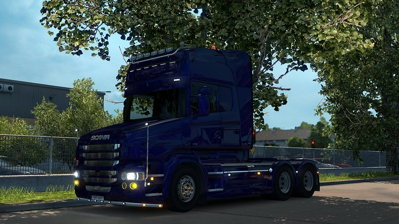
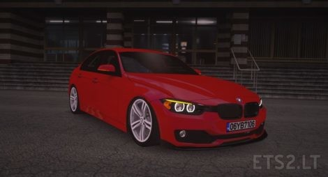
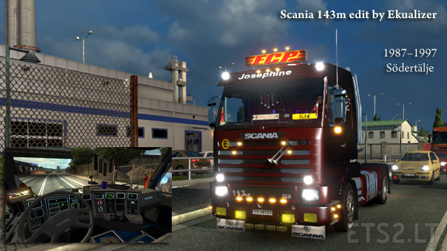
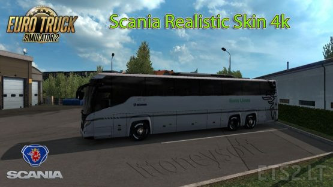
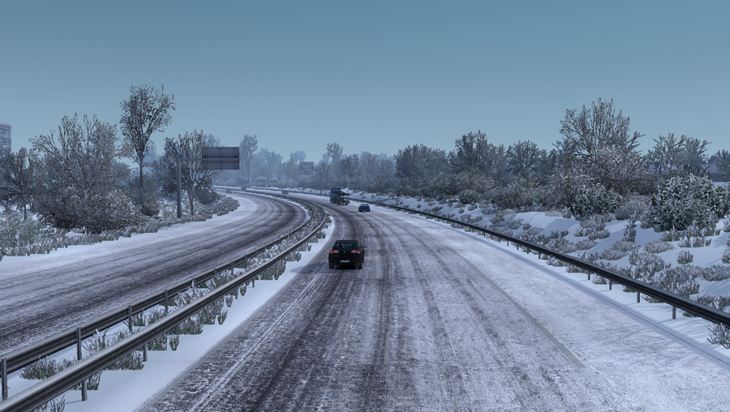

 https://ets2.lt/en/bmw-320i-f30
 https://ets2.lt/en/scania-143m-edit-by-ekualizer-patch-1-31-x/
 https://ets2.lt/en/page/2/?s=Scania+Touring
 https://grimesmods.wordpress.com/2017/05/18/frosty-winter-weather-mod/ 